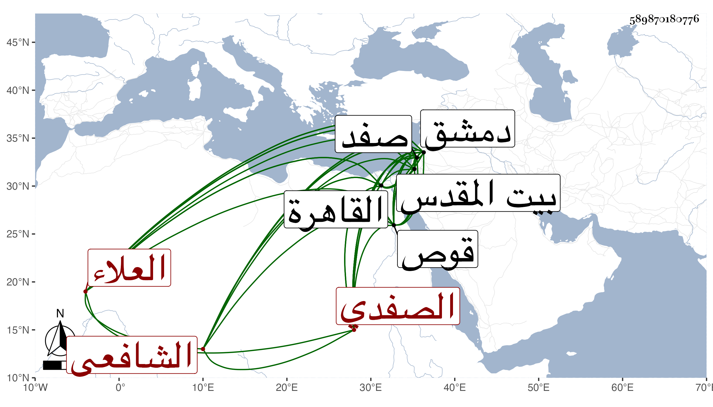

0902Sakhawi.DawLamic.ITO20230111-ara1.EIS1600.589870180776
Biography ID: 589870180776
944
علي بن محمد بن إبراهيم بن حامد العلاء الصفدي الشافعي ابن عم الشمس محمد بن عيسى بن إبراهيم الداعية الآتي ويعرف بابن حامد . ولد في ذي القعدة أو الحجة سنة أربع وثمانمائة بصفد ونشأ بها فحفظ القرآن والمنهاج ومختصر ابن الحاجب الأصلي وألفية ابن ملك ، وارتحل في الطلب إلى دمشق ثم القاهرة مجدا في الاشتغال مشمرا عن ساعده إلى أن برع وأشير إليه بالفنون وتنزل في صوفية الأشرفية برسباي من واقفها بعد امتحان شيخ الشافعية بها القاياتي له بما أحسن جوابه وكذا ولي شهادة الشونة بسعيد السعداء عن السراج الحسباني أو تقي الدين بن فتح الدين بن الشهيد ثم رغب عنها لابن المرخم ، وناب في القضاء عن شيخنا وجلس بحانوت القزازين بل ولي قضاء بلده صفد غير مرة أولها بسفارة الكمال بن البارزي مع ما بينه وبين الظاهر جقمق من الصداقة القديمة بحيث كان يؤمل منه أعلى من ذلك فشكرت سيرته ثم عزل بالشهاب الزهري ثم أعيد ثم في سنة ست وأربعين جرت بينه وبين حاجبها كائنة سجن الحاجب بسببها في قلعة صفد وأمر بنفي العلاء هذا إلى دمشق فصادف قدومه القاهرة فسمع بذلك فرام الاجتماع بالسلطان فما تمكن بل أمر بنفيه إلى قوص فتلطفوا به حتى أعيد إلى الأمر فسافر إلى دمشق في أواخر جمادى الأولى منها واستقر ابن سالم في قضاء صفد عوضه ثم أعيد إليها ثم انفصل بالمذكور أيضا ثم أعيد إليها بعد وفاته ، واستمر إلى أن صرف بالشهاب بن الفرعمي لكونه بذل أربعمائة دينار ملتزما بمثلها في كل سنة . ثم أعيد العلاء فدام حتى مات وذلك في سنة سبعين بالإسهال رحمه الله وإيانا وكان عالما بفنون خصوصا الطب وقد شهد له الشهاب بن المحمرة بمعرفة اثني عشر علما ووصفه البقاعي في طبقة سماع الموطأ للقعنبي بالإمام العلامة الحفظة المفنن وهو كذلك مع وصفه بالكرم الزائد والعفة والشهامة حتى أنه لما قدم البقاعي من القدس آواه عنده ورتب له في كل يوم رغيفين بل قيل لي أنه عرض على القاياتي أن يرغب لولده عن تصوف كان باسمه إما بالأشرفية أو سعيد السعداء رحمه الله .
